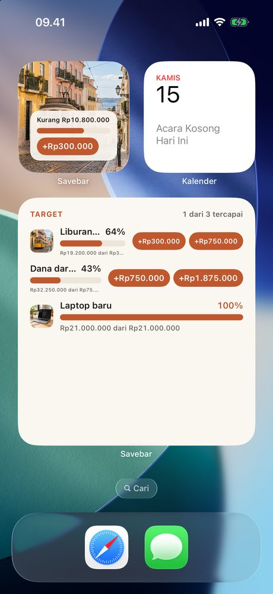

Cara menaruh target tabungan di Layar Utama iPhone
Menabung untuk sesuatu lebih mudah kalau kamu bisa melihatnya. Widget menaruh bilah progres — berapa yang sudah terkumpul dan berapa sisanya — di tempat yang kamu lihat berkali-kali sehari, dan kamu bisa menambahnya sekali ketuk.
Begini cara mengaturnya dengan Savebar. Satu target dan widget Kecil gratis.
1. Buat target
Buka Savebar dan ketuk +.
Masukkan nama dan Nominal target.
Opsional: nyalakan “Pasang tanggal target” untuk melihat sisa hari dan berapa yang perlu ditabung per hari.
Opsional: tempel tautan produk di “Tautan”. Foto dan nama diisi otomatis dari halamannya.
2. Pilih nominal untuk tombol widget
Di “Nominal di widget”, masukkan nominal yang biasa kamu sisihkan. Tombol widget menambahkannya sekali ketuk, tanpa membuka app.
3. Taruh widget di Layar Utama
Sentuh dan tahan area kosong di Layar Utama sampai app bergoyang.
Ketuk Edit (atau +) di pojok atas, lalu cari “Savebar”.
Pilih ukuran Kecil lalu ketuk Tambah Widget.
Setiap kali menyisihkan uang, ketuk tombol nominal di widget. Bilah dan persentasenya langsung bergerak di situ.

Widget yang lebih besar di gambar ini, dengan beberapa target, adalah bagian dari Savebar Pro.
Mau lebih?
Savebar Pro adalah pembelian sekali bayar, bukan langganan:
Target tanpa batas
Widget Sedang dan Besar dengan beberapa target, dan hingga dua tombol nominal per target
Widget Layar Terkunci
App Apple Watch dengan tombol nominal yang sama
Pertanyaan
Apakah terhubung ke rekening bank saya?Tidak. Kamu sendiri yang memasukkan nominalnya, jadi tidak perlu login dan tidak ada yang perlu ditautkan.
Berapa target yang bisa dibuat gratis?Satu, dengan widget Layar Utama ukuran Kecil. Savebar Pro, pembelian sekali bayar, memberi target tanpa batas, widget Sedang dan Besar yang menampilkan beberapa target, widget Layar Terkunci, dan app Apple Watch.
Bisakah menambah nominal yang tidak ada di tombol?Bisa. Buka targetnya di app dan ketuk “+ Tambah” untuk memasukkan nominal berapa pun.
Bagaimana cara memilih target yang ditampilkan widget?Sentuh dan tahan widget, ketuk Edit Widget, lalu pilih targetnya.